Aesthetic refinements of ggbrain plots
Michael Hallquist
2025-12-06
Source:vignettes/ggbrain_aesthetics.Rmd
ggbrain_aesthetics.RmdThis vignette covers the advanced aesthetic refinement capabilities
of ggbrain, allowing you to create publication-quality
brain visualizations. We’ll cover image cleaning operations, custom
color scales, combining multiple layers, adding region labels, and
combining plots using patchwork.
Images used in this demo
The package includes several images for demonstration purposes:
# MNI 2009c anatomical underlay
underlay_2mm <- system.file("extdata", "mni_template_2009c_2mm.nii.gz", package = "ggbrain")
# Parametric modulator: entropy change following feedback in learning task
echange_overlay_2mm <- system.file("extdata", "echange_ptfce_fwep_0.05_2mm.nii.gz", package = "ggbrain")
# Signed reward prediction error following feedback
pe_overlay_2mm <- system.file("extdata", "pe_ptfce_fwep_0.05_2mm.nii.gz", package = "ggbrain")
# Absolute reward prediction error
abspe_overlay_2mm <- system.file("extdata", "abspe_ptfce_fwep_0.05_2mm.nii.gz", package = "ggbrain")
# Schaefer 200-parcel atlas of cortex
schaefer200_atlas_2mm <- system.file("extdata", "Schaefer_200_7networks_2009c_2mm.nii.gz", package = "ggbrain")
# Labels for the Schaefer atlas
schaefer_labels <- read.csv(
system.file("extdata", "Schaefer_200_7networks_labels.csv", package = "ggbrain"),
na.strings = c("", "NA")
) %>%
rename(value = roi_num) # ggbrain requires a 'value' column for mergingAdjustments to the appearance of image layers
When rendering brain slices, particularly functional activation maps,
the raw data often contains visual artifacts that can be distracting or
aesthetically unappealing. ggbrain provides several tools
for cleaning up the appearance of image layers.
Removing small specks (remove_specks)
At times, when slicing a given image (especially functional
activations), it is possible that some clusters are very small, yielding
small ‘specks’ on some rendered slices. These are visually unappealing
and may merit removal. The remove_specks argument specifies
the pixel threshold used to remove clusters smaller than a certain size.
For example, remove_specks = 20 would remove any clusters
smaller than 20 pixels in size from each slice on the rendered
image.
base_plot <- ggbrain(bg_color = "gray80", text_color = "black") +
images(c(underlay = underlay_2mm, overlay = pe_overlay_2mm)) +
slices(c("z = 4", "z = 20")) +
geom_brain(definition = "underlay")
# Without removing specks
p1 <- base_plot +
geom_brain(definition = "overlay", fill_scale = scale_fill_distiller("z", palette = "Reds")) +
render() + plot_annotation(title = "Without remove_specks")
# With remove_specks = 20
p2 <- base_plot +
geom_brain(definition = "overlay", fill_scale = scale_fill_distiller("z", palette = "Reds"),
remove_specks = 20) +
render() + plot_annotation(title = "With remove_specks = 20")
p1 / p2Note that removing specks can, at the extreme, misrepresent the data, so use this feature judiciously.
Filling small holes (fill_holes)
Another common aesthetic issue is small holes inside clusters. These
may reflect voxels that fall slightly below a statistical threshold. The
fill_holes argument specifies the size of holes (in pixels)
that should be filled on the rendered slices using nearest neighbor
imputation.
# Without filling holes
p1 <- base_plot +
geom_brain(definition = "overlay", fill_scale = scale_fill_distiller("z", palette = "Reds")) +
render() + plot_annotation(title = "Without fill_holes")
# With fill_holes = 100
p2 <- base_plot +
geom_brain(definition = "overlay", fill_scale = scale_fill_distiller("z", palette = "Reds"),
fill_holes = 100) +
render() + plot_annotation(title = "With fill_holes = 100")
p1 / p2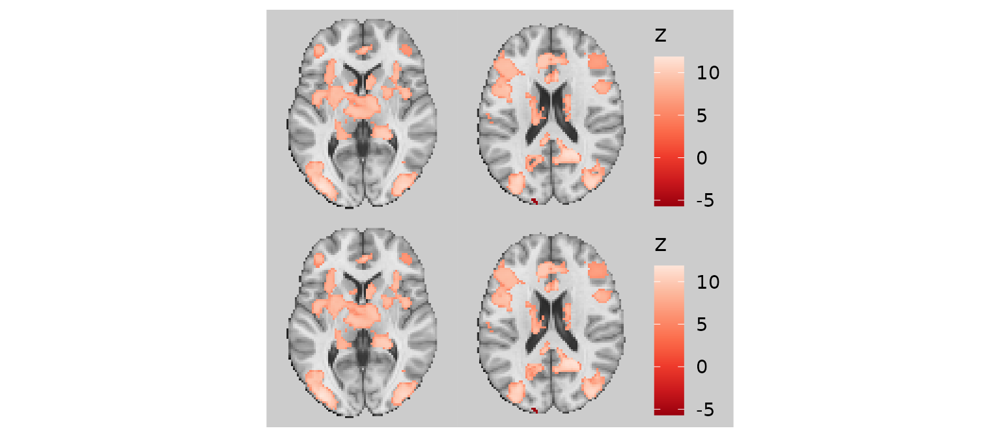
For integer-valued or categorical images, the mode of the neighboring voxels is used for imputation rather than the mean.
Trimming threads (trim_threads)
The trim_threads argument iteratively removes pixels
that have fewer than the specified number of neighboring pixels
(including diagonals). This helps clean up thin “threads” or isolated
pixels that can occur at the edges of clusters.
# Without trimming
p1 <- base_plot +
geom_brain(definition = "overlay", fill_scale = scale_fill_distiller("z", palette = "Reds")) +
render() + plot_annotation(title = "Without trim_threads")
# With trim_threads = TRUE (uses default of 3 neighbors)
p2 <- base_plot +
geom_brain(definition = "overlay", fill_scale = scale_fill_distiller("z", palette = "Reds"),
trim_threads = TRUE) +
render() + plot_annotation(title = "With trim_threads = TRUE")
p1 / p2Combining image cleaning operations
For the best visual results, you can combine all three cleaning operations:
gg_clean <- base_plot +
geom_brain(
definition = "overlay",
fill_scale = scale_fill_distiller("z-stat", palette = "Reds"),
remove_specks = 20,
fill_holes = 100,
trim_threads = TRUE
)
plot(gg_clean)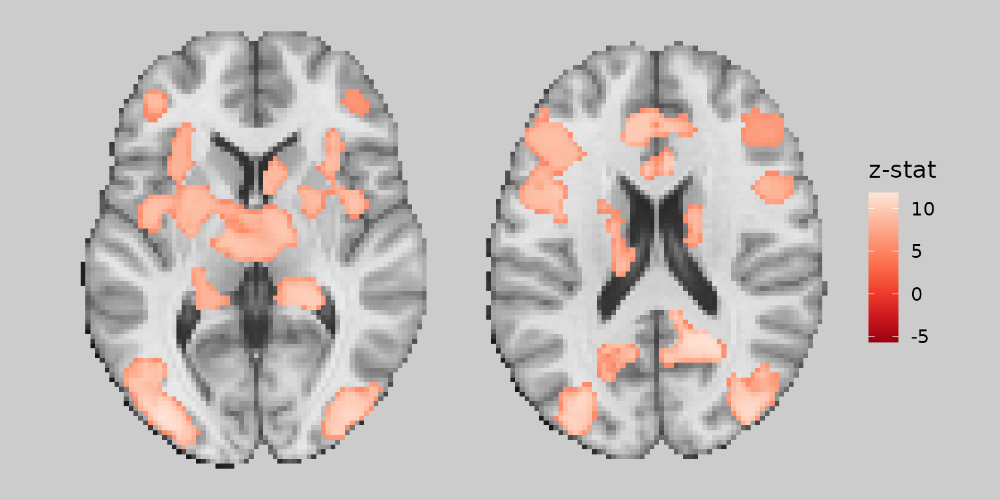
Working with color scales
Custom color scales
You can use any ggplot2 scale_fill_* function to
customize the color mapping:
gg_viridis <- ggbrain(bg_color = "gray80", text_color = "black") +
images(c(underlay = underlay_2mm, overlay = echange_overlay_2mm)) +
slices(c("x = 0", "y = 0", "z = 30")) +
geom_brain(definition = "underlay") +
geom_brain(
definition = "overlay",
fill_scale = scale_fill_viridis_c("Entropy\nChange", option = "magma"),
remove_specks = 15
)
plot(gg_viridis)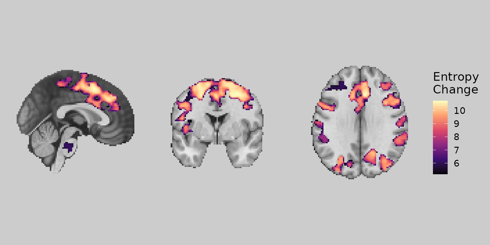
Bisided color scales
For maps with both positive and negative values (e.g., signed
prediction errors), use scale_fill_bisided() to create
separate color scales:
gg_bisided <- ggbrain(bg_color = "gray80", text_color = "black") +
images(c(underlay = underlay_2mm, overlay = pe_overlay_2mm)) +
slices(c("x = 0", "y = 0", "z = 30")) +
geom_brain(definition = "underlay") +
geom_brain(
definition = "overlay",
fill_scale = scale_fill_bisided(
name = "Signed PE",
neg_scale = scale_fill_distiller(palette = "Blues", direction = 1),
pos_scale = scale_fill_distiller(palette = "Reds"),
symmetric = TRUE
),
remove_specks = 20
)
plot(gg_bisided)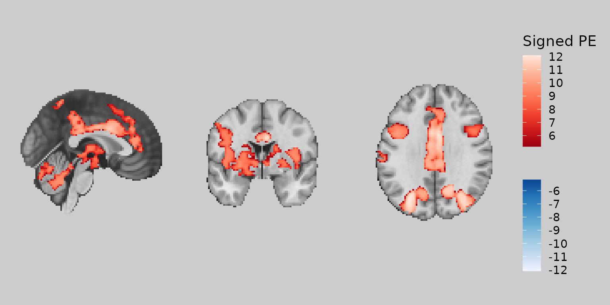
Working with categorical images and labels
Mapping fills to label columns
When working with labeled images (e.g., atlases), you can map the fill color to label columns rather than numeric values. This requires adding labels to your image and specifying the appropriate aesthetic mapping:
# Create a subset of labels for Dorsal Attention Network
dan_labels <- schaefer_labels %>%
filter(network == "DorsAttn") %>%
mutate(
dan_group = case_when(
value %in% c(31, 32, 135, 136) ~ "MT+",
value %in% c(33:40, 137:144) ~ "PPC",
value %in% c(41:43, 145:147) ~ "Premotor"
),
dan_group = ordered(dan_group, levels = c("MT+", "PPC", "Premotor"))
)
# Define colors for DAN groups
dan_colors <- c("MT+" = "#E41A1C", "PPC" = "#377EB8", "Premotor" = "#4DAF4A")
gg_dan <- ggbrain(bg_color = "gray90", text_color = "black") +
images(c(underlay = underlay_2mm)) +
images(c(dan_atlas = schaefer200_atlas_2mm), labels = dan_labels) +
slices(c("x = -30", "z = 50")) +
geom_brain(
definition = "underlay",
fill_scale = scale_fill_gradient(low = "grey30", high = "grey80"),
show_legend = FALSE
) +
geom_brain(
definition = "dan_atlas",
mapping = aes(fill = dan_group),
fill_scale = scale_fill_manual("DAN Region", values = dan_colors),
show_legend = TRUE,
remove_specks = 10,
fill_holes = 20
)
plot(gg_dan)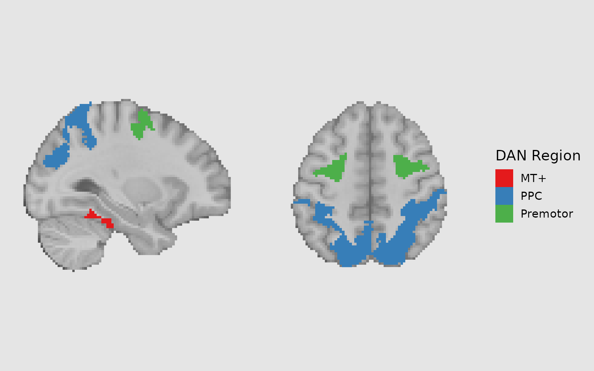
Combining fills with outlines
A powerful technique is to combine filled regions with outlines to highlight different groupings. For example, you might fill regions by network and outline individual parcels:
gg_outlined <- ggbrain(bg_color = "gray90", text_color = "black") +
images(c(underlay = underlay_2mm)) +
images(c(dan_atlas = schaefer200_atlas_2mm), labels = dan_labels) +
slices(c("x = -30", "z = 50")) +
geom_brain(
definition = "underlay",
fill_scale = scale_fill_gradient(low = "grey30", high = "grey80"),
show_legend = FALSE
) +
geom_brain(
definition = "dan_atlas",
mapping = aes(fill = dan_group),
fill_scale = scale_fill_manual("DAN Region", values = dan_colors),
show_legend = TRUE,
remove_specks = 10,
fill_holes = 20,
unify_scales = TRUE
) +
# Add outlines for individual Schaefer regions
geom_outline(
definition = "dan_atlas",
size = 1,
mapping = aes(group = MNI_Glasser_HCP_v1.0),
outline = "cyan",
remove_specks = 10
)
plot(gg_outlined)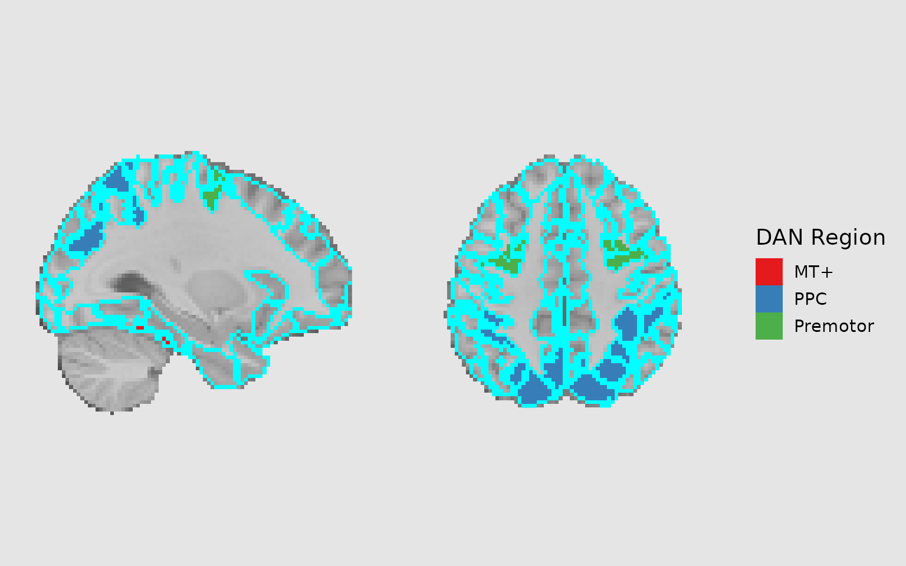
Adding region labels
Using geom_region_label_repel
The geom_region_label_repel() function adds text labels
to regions, using ggrepel to prevent overlapping. This is
extremely useful for labeling multiple regions:
# Add custom short labels for display
dan_labels_short <- dan_labels %>%
mutate(
short_label = sub("Anterior", "Ant.", MNI_Glasser_HCP_v1.0),
short_label = sub("Posterior", "Post.", short_label),
short_label = sub("Superior", "Sup.", short_label),
short_label = sub("Inferior", "Inf.", short_label)
)
gg_labeled <- ggbrain(bg_color = "gray90", text_color = "black") +
images(c(underlay = underlay_2mm)) +
images(c(dan_atlas = schaefer200_atlas_2mm), labels = dan_labels_short) +
slices(c("x = -30", "z = 50")) +
geom_brain(
definition = "underlay",
fill_scale = scale_fill_gradient(low = "grey30", high = "grey80"),
show_legend = FALSE
) +
geom_brain(
definition = "dan_atlas",
mapping = aes(fill = dan_group),
fill_scale = scale_fill_manual("DAN Region", values = dan_colors),
show_legend = TRUE,
remove_specks = 10,
fill_holes = 20
) +
geom_region_label_repel(
image = "dan_atlas",
label_column = "value",
min.segment.length = 0,
size = 3,
color = "black",
force_pull = 0,
force = 1.5,
max.overlaps = Inf,
box.padding = 0.5,
label.padding = 0.15,
min_px = 10 # Only label regions with at least 10 pixels on the slice
)
plot(gg_labeled)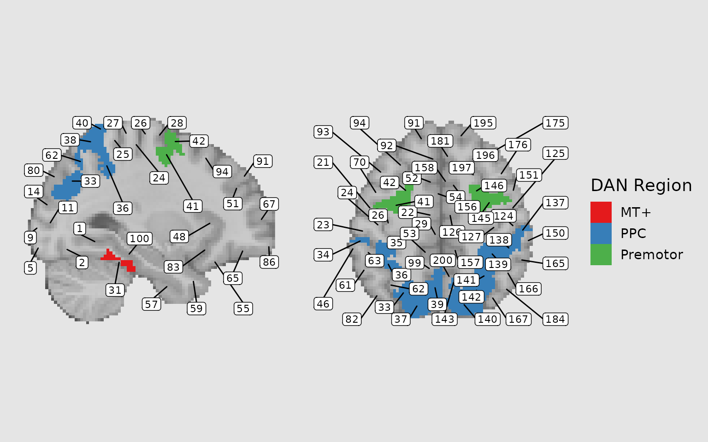
Adding annotations
Coordinate annotations
Use annotate_coordinates() to add slice coordinate
labels to each panel:
gg_coords <- ggbrain(bg_color = "gray90", text_color = "black") +
images(c(underlay = underlay_2mm, overlay = pe_overlay_2mm)) +
slices(c("x = 0", "y = 0", "z = 30")) +
geom_brain(definition = "underlay") +
geom_brain(
definition = "overlay",
fill_scale = scale_fill_bisided(),
remove_specks = 15
) +
annotate_coordinates(hjust = 1, color = "black", x = "right", y = "bottom", size = 3)
plot(gg_coords)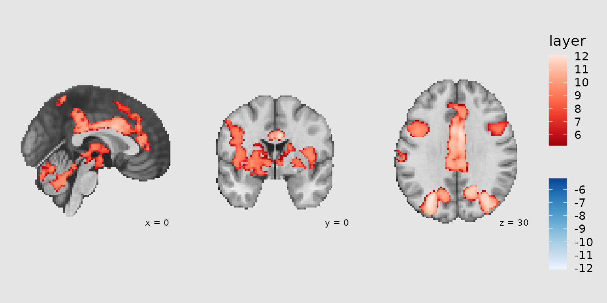
Orientation annotations
Use annotate_orientation() to add neurological
orientation labels (L/R, A/P, S/I):
gg_orient <- ggbrain(bg_color = "gray90", text_color = "black") +
images(c(underlay = underlay_2mm, overlay = pe_overlay_2mm)) +
slices(c("x = 0", "y = 0", "z = 30")) +
geom_brain(definition = "underlay") +
geom_brain(
definition = "overlay",
fill_scale = scale_fill_bisided(),
remove_specks = 15
) +
annotate_orientation(size = 4, color = "gray20")
plot(gg_orient)Creating reusable plot components
When creating multiple related plots, it’s efficient to define common components that can be reused. This is similar to creating a ‘theme’ for your brain plots:
# Define common plot elements
common_parts <-
images(c(underlay = underlay_2mm)) +
geom_brain(
definition = "underlay",
fill_scale = scale_fill_gradient(low = "grey30", high = "grey80"),
show_legend = FALSE
) +
annotate_coordinates(hjust = 1, color = "black", x = "right", y = "bottom", size = 3)Now you can use common_parts across multiple plots with
different overlays or slice selections.
Combining ggbrain plots with patchwork
The patchwork package provides powerful tools for
combining multiple plots. After rendering your ggbrain plots, you can
use patchwork operators to arrange them.
Basic patchwork combinations
# Create two different brain plots
gg_axial <- ggbrain(bg_color = "gray90", text_color = "black", title = "Axial View") +
images(c(underlay = underlay_2mm, overlay = pe_overlay_2mm)) +
slices(c("z = 20", "z = 40")) +
geom_brain(definition = "underlay") +
geom_brain(definition = "overlay", fill_scale = scale_fill_bisided(), remove_specks = 20) +
render()
gg_sagittal <- ggbrain(bg_color = "gray90", text_color = "black", title = "Sagittal View") +
images(c(underlay = underlay_2mm, overlay = pe_overlay_2mm)) +
slices(c("x = -40", "x = 40")) +
geom_brain(definition = "underlay") +
geom_brain(definition = "overlay", fill_scale = scale_fill_bisided(), remove_specks = 20) +
render()
# Combine using patchwork
combined <- gg_axial / gg_sagittal +
plot_annotation(
title = "Reward Prediction Error Activation",
tag_levels = "A",
tag_suffix = ")",
theme = theme(plot.title = element_text(size = 16, face = "bold"))
) &
theme(plot.tag = element_text(face = "bold", size = 14))
combined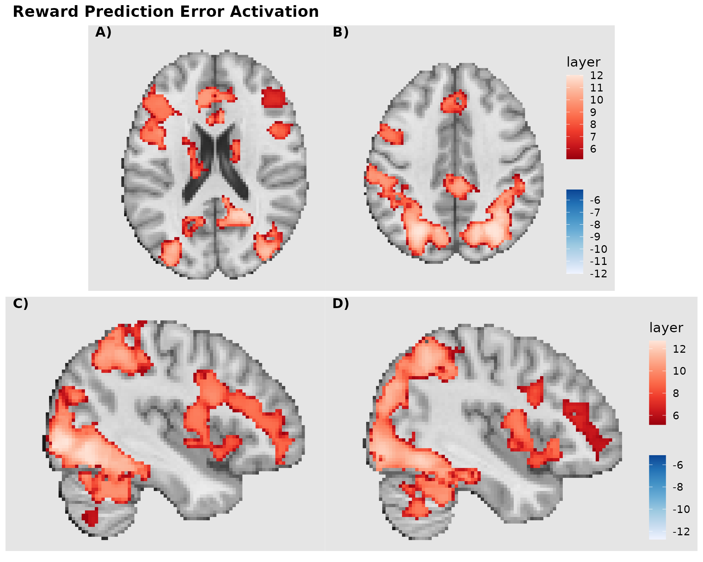
Advanced layout with shared legend
When combining multiple plots with similar color scales, you can extract and share a common legend:
# Create plots without legends
p1 <- ggbrain(bg_color = "gray90", text_color = "black", title = "Entropy Change") +
images(c(underlay = underlay_2mm, overlay = echange_overlay_2mm)) +
slices(c("x = 0", "z = 20")) +
geom_brain(definition = "underlay") +
geom_brain(definition = "overlay",
fill_scale = scale_fill_viridis_c("z-stat"),
remove_specks = 15) +
render()
p2 <- ggbrain(bg_color = "gray90", text_color = "black", title = "Prediction Error") +
images(c(underlay = underlay_2mm, overlay = abspe_overlay_2mm)) +
slices(c("x = 0", "z = 20")) +
geom_brain(definition = "underlay") +
geom_brain(definition = "overlay",
fill_scale = scale_fill_viridis_c("z-stat"),
remove_specks = 15) +
render()
# Combine with collected legends and tags
final_plot <- (p1 | p2) +
plot_layout(guides = "collect") +
plot_annotation(
title = "Learning-Related Brain Activation",
tag_levels = "A",
theme = theme(plot.title = element_text(hjust = 0.5, size = 18, face = "bold"))
)
final_plot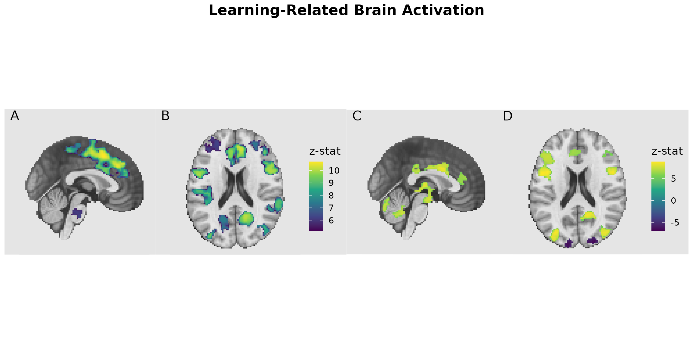
Saving ggbrain plots to file
To save your plots with consistent styling, use ggsave()
or base R graphics devices. The bg argument ensures the
background color extends to the full output device:
# Using ggsave (recommended)
ggsave("my_brain_plot.png", render(gg_labeled), width = 10, height = 6, dpi = 300, bg = "gray90")
ggsave("my_brain_plot.pdf", render(gg_labeled), width = 10, height = 6)
# Using base R devices
pdf("my_brain_plot.pdf", width = 10, height = 6, bg = "gray90")
plot(gg_labeled)
dev.off()
png("my_brain_plot.png", width = 10, height = 6, units = "in", res = 300, bg = "gray90")
plot(gg_labeled)
dev.off()Filtering images for focused displays
You can filter an image to display only certain regions using the
filter argument in images(). This is useful
when you want to focus on specific ROIs or networks:
# Get specific parcel values for Premotor regions
premotor_parcels <- dan_labels %>%
filter(dan_group == "Premotor") %>%
pull(value)
# Create focused display of just Premotor regions
gg_premotor <- ggbrain(bg_color = "gray90", text_color = "black", title = "Premotor Regions") +
images(c(underlay = underlay_2mm)) +
images(
c(premotor_atlas = schaefer200_atlas_2mm),
labels = dan_labels,
filter = premotor_parcels # Only include Premotor parcels
) +
slices(c("x = -45", "z = 50", "x = 50")) +
geom_brain(
definition = "underlay",
fill_scale = scale_fill_gradient(low = "grey30", high = "grey80"),
show_legend = FALSE
) +
geom_brain(
definition = "premotor_atlas",
mapping = aes(fill = dan_group),
fill_scale = scale_fill_manual("Region", values = c("Premotor" = "#4DAF4A")),
show_legend = TRUE,
remove_specks = 10
) +
annotate_coordinates(hjust = 1, color = "black", x = "right", y = "bottom", size = 3)
plot(gg_premotor)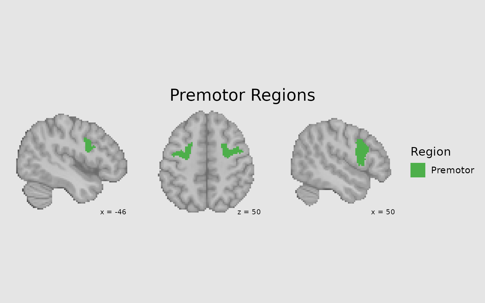
Target resolution for higher quality displays
Use target_resolution() to upsample your display for
smoother, higher-resolution figures:
# Without upsampling (native 2mm resolution)
p1 <- ggbrain(bg_color = "gray90", text_color = "black") +
images(c(underlay = underlay_2mm, overlay = pe_overlay_2mm)) +
slices(c("z = 30")) +
geom_brain(definition = "underlay") +
geom_brain(definition = "overlay", fill_scale = scale_fill_bisided(), remove_specks = 15) +
render() + plot_annotation(title = "Native 2mm resolution")
# With upsampling to 1mm
p2 <- ggbrain(bg_color = "gray90", text_color = "black") +
images(c(underlay = underlay_2mm, overlay = pe_overlay_2mm)) +
slices(c("z = 30")) +
target_resolution(1.0, interpolation = "cubic") +
geom_brain(definition = "underlay") +
geom_brain(definition = "overlay", fill_scale = scale_fill_bisided(), remove_specks = 15) +
render() + plot_annotation(title = "Upsampled to 1mm with cubic interpolation")
p1 | p2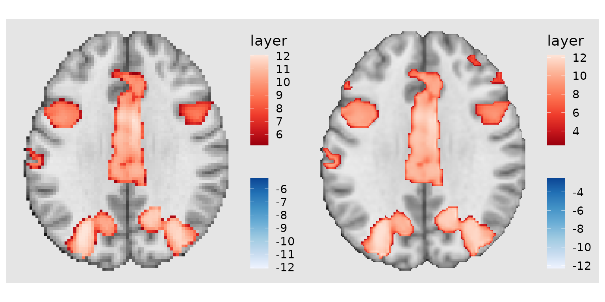
Other considerations
Resampling images externally
Users could also consider resampling images externally using tools
like AFNI’s 3dresample before loading into
ggbrain. This will yield similar results to te
The hierarchy of a ggbrain plot
Every ggbrain plot is composed of:
-
Plot: The overall container for the visualization
-
Panels (Slices): Each showing a 2D slice along one
axis (x/sagittal, y/coronal, z/axial)
- Layers: Raster data mapped to fill colors (underlays, overlays, atlas regions)
- Outlines: Boundaries of clusters or regions
- Annotations: Text or geometric marks (coordinates, orientation labels)
- Region Labels: Text labels positioned at region centroids
-
Panels (Slices): Each showing a 2D slice along one
axis (x/sagittal, y/coronal, z/axial)
Understanding this hierarchy helps when building complex, multi-layered visualizations.
Tips for publication-quality figures
- Use consistent background colors across all panels and in your output device
- Clean up specks and fill holes to improve visual appearance
- Choose appropriate color scales - consider colorblind-friendly palettes
- Add orientation and coordinate labels for interpretability
-
Use
patchworktags (A, B, C…) for multi-panel figures - Save as vector formats (PDF, SVG) for maximum quality and editability
- Consider upsampling for smoother appearance in final figures